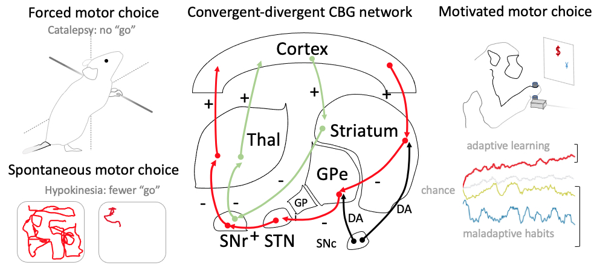
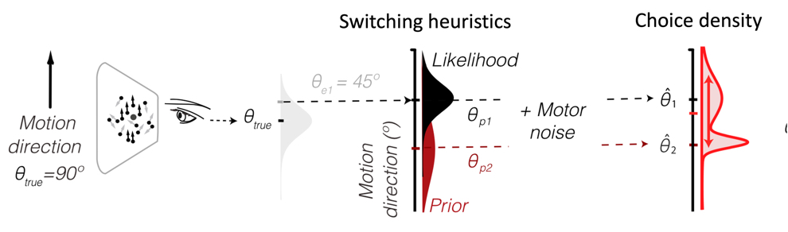

Research statement
The goal of my research is to
understand the computational principles and
limitations that underlie Human adaptive decision-making. I find staggering the Human
brain’s ability to make choices
that are more flexible, efficient and robust than
today’s most powered machines, in a bewilderingly complex world and under scarce resource. I use my extensive training in
experimental psychology, brain recording and computational modeling techniques,
acquired from collaborations with expert leaders in experimental and
theoretical neurosciences, to investigate how adaptive perceptual and motor choices emerge from brain networks
under such limited resources.
Neural mechanisms in (mal)adaptive sensorimotor
decision-making. I have uncovered the
neural mechanisms of forced and spontaneous movement initiation and I have isolated
a new target for the treatment of two of its disorders which are symptoms of Parkinson’s
and Huntington’s diseases, Addiction, medicated Schizophrenia
and depression. Once the brain has selected a motor plan, it must initiate, execute and terminate its component movements in order, while
continuously adjusting their kinematics to satisfy task and energy constraints. A bulk of studies had linked this
process to a brain network called the Cortico-Basal-Ganglia (CBG). While the network’s
anatomy is well-known, and a debated
qualitative model of how it initiates movement had emerged, no one had
identified the precise origins and mechanisms of movement initiation disruptions.
I partnered with Chetrit et al. [Chetrit et al., 2008,
2009*] to fully describe movement initiation in normal and pathological conditions
akin to side effects of medicated Schizophrenia [1,2] and Depression, and symptoms
of Parkinson’s disease, and we are the first to link them with electrophysiological
changes in the entire underlying sensorimotor network [Chetrit et al., 2008, 2009*]. Catalepsy,
the inability to initiate movement out of an imposed position, and hypokinesia,
reduced spontaneous motor activity, instantiate disruptions of a forced and spontaneous
type of motor choice. To probe their neural origins,
we paired causal manipulations and invasive single neuron recordings in sites
located deep in the brain of medicated rats. We showed that the drug made the rats
cataleptic on a horizontal bar and reduced their locomotion, repetitive
and rearing activities, as measured by a motion detection device in an open field and that catalepsy and hypokinesia were
associated with lower spiking rates in the network’s output.
Recording in the two main afferent pathways to the network’s output enabled us
to isolate drug-induced
alteration in one pathway (red arrows). We showed that lesions
of a site in this pathway normalized both the neural network’s state and the
behavior, providing causal evidence that this site is not just a passive relay as
described in the classical functional model of the network, but that it integrates
information for movement initiation. This makes it a key target for the
treatment of motor side-effects in medicated Schizophrenia [1, 2], Depression
and Parkinson’s disease.
We uncovered changes
in the properties of neuronal activity and synaptic changes correlated with the
transition from normal to abnormal movements that raise new questions on the nature
of motor information coding and transmission [Chetrit et al., 2008, 2009*]. According to the classical model, movement
suppression should correlate with an increase in the spiking rate of the sensorimotor
network’s output. We showed that motor suppression correlated with a decrease rather
than an increase of the spiking rate, and an unexpected disorganization of the
output’s activity which suggests a critical role of the isolated site and the output’s
spiking pattern in movement initiation. We also showed that the motor
disruptions are associated with a change in neural plasticity: by pairing cortical stimulations with recordings
of the isolated pathway, the
drug reduced the sensitivity of the pathway to cortical inputs.
During my doctoral training, I tackled
a daunting challenge which was understanding how the same neural network learns
to make motor choices motivated by reward [Laquitaine, 2010; Laquitaine et al., 2013a*]. Model-free learning is the theoretical framework predominantly
used to make normative prescriptions on how to bind motor programs with visual cues and reward into a choice policy, picked in a search space that explodes with task parameters. It prescribes that a decision-maker should gradually
learn the expected reward of different options. As learning progresses, he shifts
from random exploration to exploitation of the most rewarding option [Laquitaine
et al., 2009a]. Yet, if studies of aggregate choice agreed with this prescription,
there had been reports of choice patterns akin to heuristics inconsistent with the
theory. We clarified the behavior reported in this decision-making framework and
its neural substrates. Under the supervision of Dr Boraud, I
trained in the design of psychophysics experiments and simultaneous recording
of spiking activities in large groups of neurons in awake monkeys, and I engaged
in a collaboration with Prof Loewenstein, a theoretical physicist, expert
in Reinforcement learning, to develop computational models that link the neural activity
to the monkeys’ choices.
I revealed substantial
heterogeneity in the patterns of choices of two monkeys [Laquitaine et al.,
2009b, 2013a*] that
cannot fully be explained [3] by the popular normative Model-free framework
of reward-based decisions but aligns with a the more general Bayesian Framework
[4]. For two years, I trained two monkeys, more amenable than
rodents to learn highly cognitive tasks, to perform a visuo-motor task during
which they learnt to choose between two options associated with stochastic
rewards. We showed that the monkeys switched, from
day to day, between adaptive reward-based choices, during which they gradually shifted from randomly exploring
the two options to exploiting the most rewarding option, and rigid habit-based choices. Choices were either driven by reward signals, as
prescribed by the theory, or by initial biases for reward-irrelevant contextual
cues, which are akin to strong prior beliefs in the Bayesian framework.
I dissected the neural signatures of
the uncovered choice patterns and showed that the sensorimotor network encodes
choice predictive information at two levels: at the single neuron and at the
population level [Laquitaine
et al., 2013a*]. I simultaneously recorded the spiking activity of
neurons from the input node of the sensorimotor network of the two monkeys
while they performed the task and I showed that when the spiking rate of the
input node was low and when the number of neurons that learnt to prefer the
most rewarding option was small, rigid choices emerged, or else adaptive
choices emerged. We used these insights to improve the classical model of
action selection in the network by adding a thresholding “attentional” signal
that filters out contextual distractors [Laquitaine, 2010].
My
work has had notable theoretical, methodological and
therapeutical impact on the field as attested in subsequent studies. A new theory has already capitalized on our
work to link unexplained choices with intrinsic neuronal stochasticity [5]. The observed deviations from
normative prescriptions also motivated my work with Kaveri et al., 2012 in
which we modeled two unpredicted ways by which reward influences motor choices
in rats [Kaveri et al., 2012]. Our
methodology, grounded in unsupervised descriptive statistics of choice
variability brings a fresh view of choices, which has led to better quantitative accounts of behavior and novel insights
into choice strategies [6, 7]. We disclose precise neural signatures of adaptive and rigid
habitual choices that
position the
stimulation of the sensorimotor network’s input nucleus as a potential therapy
for habit disorders such as Bulimia Nervosa [8].
Not ideal but adaptive and efficient
heuristic computations in perceptual decision-making. I have uncovered a computational principle by which the
brain produces flexible, efficient and robust
perceptual decisions, which pinpoints integration as a locus of its
computational limits [Laquitaine and Gardner, 2015, 2018*]. The brain
interprets visual scenes by abstracting patterns of light changes into shape,
texture, location and motion representations that can
be used to support decision-making. But for interpretation to be reliable,
representations must be robust to system-intrinsic noise and extrinsic sources
of noises. How humans achieve
such feat so efficiently has been a long-standing question in Cognition and
Neuroscience at large. Human perceptual choice biases have
long been rationalized as Bayesian: the brain integrates ambiguous
sensory inputs with an inner world model and shifts its percept toward the most
reliable information. Whether such accurate but costly combination was achieved
or whether neural networks carried out heuristic operations was subject to
fierce debate.
In collaboration with Prof Gardner, an expert
in visual psychophysics and human system neuroscience techniques at Stanford
University, I have shown that humans’ perceptual choices cannot be fully explained
by the normative Bayesian theory but rather align with a frugal heuristic that
forgoes integration [Laquitaine
and Gardner, 2015, 2018*].
Support for Bayesian integration comes from experimental studies of aggregate choices
(over days or subjects [Laquitaine and Gardner, 2012, 2013b*, 2013c]). Yet there was no evidence that
the conclusion holds for individual choices, which would provide the most rigorous
support for the theory. Theoretical
studies had also demonstrated that Bayesian integration could be achieved at
the level of neuronal populations.
Yet these theories stand on ambitious computational assumptions: exploiting the
rich statistics of visual scenes requires fantastic storage, encoding and
integrative capacities. I tested whether Humans exploit rich statistics as
prescribed by the Bayesian theory with a fine-grained statistical and modeling
analytical approach. I designed two continuous visual estimation tasks in which
I varied independently the noise of visual stimuli and the statistics of their
occurrence to reverse engineer their internal representations from the full
distribution of perceptual choices. I showed that perceptual choices are best
explained by a switching heuristic that approximates Bayesian prescriptions, while
forgoing the costly integration of prior and likelihood [Laquitaine and
Gardner, 2015, 2018*]. I showed that the strategy is adaptive: subjects quickly learn accurate priors (within
100 stimulus exposure) and flexibly adjust their priors to change in
statistics. The choice heuristic is efficient, forgoing likelihood and prior
integration. Yet perceptual choices are biased toward the most reliable
information proportionally to their prior and the stimulus precision, indicating
an adaptive use of both information uncertainties in agreement with Bayesian
theory. The switching strategy is robust:
it remained stable within days, across days and subjects and generalized to different
sensory noises across visual tasks [Laquitaine and Gardner, 2015, 2018*].
My impacts on the field are three-fold:
methodological, theoretical and therapeutical. First, I
provide a new rigorous methodology to measure the qualitative and quantitative agreement
of perceptual choices with models in the Bayesian framework. Over the last
four years my methodology has inspired several studies [9, 10, 11]. I have designed 13 Bayesian models,
some of which have inspired studies of cue-combination for navigation [10] and sensorimotor skills [12].
To promote additional research, I have provided an open-source
dataset that have already been used [13]. Second, I bring evidence
for a novel conceptual view of the brain that reconciliates the Bayesian and
heuristics theories: limited in resource, the brain carries out frugal heuristic
operations that approximate Bayesian prescriptions. My work has been
the foundation of a new theory of computation in dynamic neural
circuits [13] in which neuron
states are sensitive to the spatiotemporal properties of the visual scene. It also opens a new path for research on human sense of
confidence, which is critical to metacognition [14]. Third, our
heuristics has already motivated models for the diagnostic of chronic
schizophrenia [15] and ADHD [16] enriching
diagnostic tools of computational psychiatry.
Architectural
and synaptic mechanisms underlying the sensorimotor and visual network. I have shown that an architecture that is
pervasive in the brain at multiple scales, and that is shared by the visual
cortical network and the sensorimotor network, can emerge from a simple
computational rule driven by a homeostatic constraint. The sensorimotor network has a bottleneck recurrent architecture which suggests substantial
convergence of information broadcasted back to the cortex for contextual
modulation. I currently lead a collaboration with Cees Van Leuven at KU Leuven University, to study how artificial
neural networks adaptively self-organize into functional topologies akin to the
brain, under homeostatic constraints. We have shown that adaptive rewiring enables networks to propagate information more efficiently, robustly and
that it improves their information-theoretic capacity [Rentzeperis et al., 2021*]. I now look at how efficient and
adaptive functionalities emerge from the synergy of network topology and neuron
properties under resource constraints.
To
understand how visual cortical networks encode task statistics, I currently
collaborate with Professor Justin Gardner at Stanford University and Dr Ilias
Rentzeperis at CNRS, Paris, to disclose the cortical locus of visual prior
expectations and the cortical processing of priors and visual inputs. We
combine psychophysics, fMRI and computational modeling guided by Statistical
Detection Theory [Rentzeperis et al., 2016] to link human visual
cortical activity with perceptual choices. I have shown that human incorporate
motion direction statistics into their choices with a heuristic that
approximate Bayesian optimality. Yet whether and how tasks and resource
constraints shape choice strategies is unclear. Why humans shift from switching
to Bayesian strategies during development is also puzzling [17, 18].
I also
collaborate with Cees Van Leeuwen, at KU Leuven, where I pursue my study of how
biologically inspired neural networks self-organize to develop efficient and
functional topologies akin to the brain.
Together we
investigate how the synergy of plasticity [Rentzeperis et al., 2021*]
and neuronal properties can produce efficient visual functionalities. I am also using biomimetic deep
learning models to investigate how structure and neuronal properties can enable fast
and efficient visual threat detection in cortico-subcortical visual networks
with Dr. Dario Prandi and Dr. Ilias Rentzeperis at CNRS, Paris, in the lens of
Statistical Decision Theory.
Teaching statement
At the core, teaching is about helping students learn and think critically about a discipline’s knowledge, recognize its central problems and design practical approaches to solve them. I taught a diverse group of students, in and out of the COVID-19 pandemic, to evaluate and build knowledge they used to solve conceptual and practical problems. This diversity was a major challenge which compelled the use of different teaching approaches and delivery modes, as I taught the Scientific Method to university undergraduates on-site, and machine learning engineering to data scientists, onsite and online. Although the methods and materials I used differed, the common thread of my teaching was to keep students focused and interested via actively learning to collaborate on a project in small groups.
As a teaching assistant in Scientific Methodology for two years, for freshmen and sophomores in Biology at Bordeaux University, I combined seminar talks, lab assignments and collaborative research projects to teach a class of 20 students to reason scientifically. While achieving that goal was predicated on learning basic knowledge in Biology, we made it a priority to interleave passive lectures and reading assignments with weekly active research in groups on a topic students chose. I created small four-person groups within which students frequently exchanged, negotiating their topic, an article’s relevance and task delegation, during weekly visits I supervised at the library. Our syllabus conveyed clear common expectations about the course’s goals, but as maturity gaps makes reaching the same goals harder for weakest students, we relied on a questionnaire to maximize shared interests and maturity levels within groups. This enabled us to orient the weak groups toward easy topics, freeing time to explain difficult concepts. We structured the course around a series of four intermediate learning outcomes and it ended with two capstone outcomes. To force students to take ownership of their learning, we first used an individual assignment, which was to take, review and organize notes during a seminar talk I gave on my PhD’s work and deliver them in writing. Each group then chose, broke down the logic and justified the importance of research articles, during in-class discussions. Understanding the logic of a paper helped them summarize an article and deliver it in a written abstract. They performed a lab experiment in Biochemistry and described it in a written lab report. The two final assignments were to compose a literature review, delivered in a written report, and to defend that review in an oral presentation illustrated with visual slides and in a Q&A session. Allowing students to choose their research topic freely motivated them to engage in class, but I also created opportunities for them to explain their research to other groups, as experts, in their own words. I sprinkled reflections, raised questions and incentivized engagement with positive feedbacks and extra credits. This helped quickly identify misconceptions and roadblocks. The course’s highlight was when I had them visit my laboratory and observe while I performed an experiment with monkeys, which made research very concrete to them.
I taught three teams of data scientists to use practical machine learning engineering skills, as a lead instructor in the banking sector, which required a different type of interactions with students, a palette of online teaching materials together with strong planning and team coordination skills. The data scientists came from different business departments, with different business cultures and missions, and had different business and engineering skills. The COVID-19 pandemic also required swift adjustment to virtualized teaching, so I designed the course so that I could teach on-site and online. The central learning goal was to be able to develop and deploy reproducible and maintainable machine learning software, which are also critical skills in research. I faced two major challenges which were new to me: keep students motivated in the virtual setting and satisfy the full-time working professionals’ tight allocated time to learn new skills, I had to plan the delivery of a palette of materials that included slide presentations, shared code repositories, open-source software, to develop a website with documentations and troubleshooting, setup an issue tracking software to ensure prompt and continuous support from the TAs that I coordinated. The goal was to enable students to prepare and review courses, while requiring minimal practice and downtime from their side. I delivered upcoming sessions’ slides, coding exercises directly embedded in the software to deploy and questions days in advance. At that career stage, students had acquired extensive collaborative skills and I channeled discussions in which they could contribute their strong expertise and in which their diverse educational backgrounds enable all to discover new thinking frameworks, approaches and skills to solve problems, fostering mutual growth. Students’ high satisfaction was attested by course rating consistently above 9/10.
Mentoring requires more personal interactions, one-to-one exchanges, strong empathetic and listening skills and a genuine interest in students’ experience and goals. I started practicing these skills when I was a university freshman as I tutored high school students in Biology. I also had the opportunity to mentor several master's students in Neurosciences and Mathematics during my PhD and during my postdoc at Stanford. As a lead data scientist, I oversaw the supervision and mentoring of junior and senior data scientists to raise their maturity levels. It is personally satisfying to know that one of my students in Scientific Methodology is today a postdoctoral researcher in paleoclimatic reconstruction and that one of my senior data scientists now supervises his own team.
Candidate references
Peer-reviewed
Chetrit,
J., Ballion, B., Laquitaine, S., Belujon, P., Morin, et al., PLoS
One, 4(7), e6208 (2009).
Laquitaine, S., Piron, C., Abelanas D.,
Loewenstein Y., Boraud T., PLoS One, 8(11), e80683 (2013a).
Laquitaine, S., & Gardner, J.L.,
Conference abstract at Cosyne, Salt Lake city,
Utah, February 8th - March 3 (2013b)
Laquitaine, S., & Gardner, J. L, Neuron, 97(2),
462-474 (2018).
Rentzeperis,
I., Laquitaine, S., & van Leeuwen C., Communications in
Nonlinear Science and Numerical Simulation, 107, 106135 (2021).
Non-peer-reviewed
Chetrit J., Ballion B., Laquitaine S., Belujon P., Morin S.,
Gonon F., Taupignon A., Bioulac B., Gross C.E. and Benazzouz A., Poster at SFN,
Washington, Nov. 15-19 (2008).
Laquitaine S.,
Loewenstein Y., Gross C., Hansel D., Boraud. T.,
Poster at Neurocomp09 and
at 9th colloquium of Société des Neurosciences, Bordeaux, France
(2009a).
Laquitaine S., Loewenstein Y., Boraud T., Poster at SFN,
Chicago, USA, October (2009b).
Laquitaine,
S., Doctoral dissertation, Bordeaux University, France
(2010).
Kaveri S, Koene A, Laquitaine, S., Nakahara
H., Poster at SFN, New Orleans, LA, USA, October 13-17 (2012).
Laquitaine, S., & Gardner, J.L., Poster at BSI retreat,
Karuizawa, Japan, November (2012).
Laquitaine, S., & Gardner, J.L.,
Poster at BSI retreat, Karuizawa, Japan and at SFN, San Diego,
November and at Neuro2013, Kyoto, Japan, June 22th
(2013c)
Laquitaine, S., & Gardner J.L.,
Poster at 26th annual BAVRD, Berkeley, CA, USA, Feb and at SNI
symposium, Stanford, CA, USA, 1 Oct (2015).
Rentzeperis I., Laquitaine,
S., Gardner J.L., Poster at AREADNE, Santorini, Greece, 22-26
June (2016).
Context references
1. Gottschling, C.,
Geissler, M., Springer, G., Wolf, R., Juckel, G., & Faissner, A., Neuroscience,
337, 117-130
(2016).
2.
de Boer, J. N., Voppel, A. E., Brederoo, S. G., Wijnen, F. N. K., & Sommer,
I. E. C. NPJ schizophrenia, 6(1), 1-9. (2020)
3. Hanan Shteingart and Yonatan Loewenstein, Current
Opinion in Neurobiology 25: 93–98 (2014).
4. Gianluigi
Mongillo, Hanan Shteingart, & Yonatan Loewenstein, Proceedings of the
IEEE 102, no. 4: 528–41 (2014).
5. Lior Lebovich et
al., Nature Human Behaviour 3, no. 11: 1190–1202 (2019).
6. Eduardo Mercado &
Vladimir Orduña, Learning & Behavior 43, no. 4: 323–41(2015).
7. Hanan Shteingart &
Yonatan Loewenstein, Plos One 11, no. 8: e0157643 (2016).
8. Bart Hartogsveld
et al., Eneuro 9, no. 1 (2022).
9. Aurélien Weiss et
al., Nature Communications 12, no. 1:1–17 (2021).
10. Timothy P McNamara & Xiaoli Chen, Psychonomic Bulletin &
Review, 1–32 (2021).
11. Hansem Sohn & Mehrdad Jazayeri, V, Proceedings of the National
Academy of Sciences 118, no. 25 (2021).
12. Claire Chambers
et al., Journal of Vision 18, no. 12: 8 (2018).
13 Yang Qi and Pulin
Gong, Available at SSRN 3863569.
14. Matteo Lisi et
al., Nature Human Behaviour 5, no. 2: 273–80 (2021).
15. Vincent Valton et al., Brain
142, no. 8: 2523–37 (2019).
16. Katie L Richards et al., PloS One
15, no. 12: e0243100 (2020).
17. Nardini, M., Jones, P., Bedford, R. & Braddick,. Curr. Biol. 18, 689–693 (2008).
18. Adams, W. J., PLoS Comput. Biol. 12,
e1004865 (2016).